Overview of Relational Databases
- Data in these types of databases are stored in collections, or tables
- Tables have a number of rows and columns
- Each row is (often) represented with a unique key.
Overview of Relational Databases: Keys
Keys (typically called ID’s in the Sierra Database) come in two varieties, and they define the relationship between tables.
- Primary Key
- Foreign Key
Overview of Database Entity-Relationship Model
(ERM View)
- Defines the types of relationships that can exist between entities (tables)
- One-to-One
- One-to-Many
- Many-to-Many
Database Entity-Relationship Model
One-to-One
- A Country can have one (and only one) Capital City
- A Capital City can have one (and only one) Country
Database Entity-Relationship Model
One-to-One

Database Entity-Relationship Model
One-to-Many
- A Mother may have many Children
- A Child has only one (biological) Mother
Database Entity-Relationship Model
One-to-Many
Database Entity-Relationship Model
Many-to-Many
- Authors can write several Books
- Books can be written by several Authors
Database Entity-Relationship Model
Many-to-Many
Relational Databases: Relationships (JOINS)
- Sets of data can be derived from Relational Operators from traditional math sets.
- We'll cover two of the more common JOIN operations
- JOIN (or INNER JOIN)
- LEFT JOIN (or LEFT OUTER JOIN)
Relational Databases: Relationships (JOINS) cont.
JOIN (or INNER JOIN)
- Most common type of join that there is
- Given two sets, A (left) and B (right), performing this join will return a set containing all elements of A that also belong to B.

Relational Databases: Relationships (JOINS) cont.
LEFT JOIN (or LEFT OUTER JOIN)
- Given two sets, A (left) and B (right) performing this join will return a set containing all elements of table A, as well as the elements of A that also belong to B
SQL Overview
- Structured Query Language
- Standardized language that allows a user to interface with a relational database
SQL Overview cont.
- SQL statements are groups of clauses or other statements that define the operation on the database
- Some of the more common statements include the following... (SQL is picky about the order in which these statements appear in so they're presented in the order that they can appear in the statement.)
SQL Overview cont.
-
SELECT
- Retrieves data from tables
- Most commonly used statement
-
UPDATE and SET
- Modifies a set of existing table rows
-
DELETE
- Remove set of existing rows from the table
SQL Overview cont.
-
CREATE
- Typically used to create a table in the database
-
JOIN / LEFT JOIN / etc
- Performing a join will combine the data with that of another table
-
FROM
- Indicates which table to retrieve data from
SQL Overview cont.
-
WHERE / WHERE IN
- Include or exclude data based on comparisons
-
GROUP BY
- Reduces sets into common values
-
HAVING
- Allows for filtering of the GROUP BY statement
-
LIMIT / OFFSET
- Returns specific numbers of rows from given starting point
SQL SELECT Statements
- FINALLY SOME EXAMPLES!
- Let us say we wanted to get a list of the bib records that had the lowest IDs in the system. The following query would give us a very basic view of those records.
SQL SELECT Statement cont.
SELECT
r.id, r.record_type_code,
r.record_num, r.creation_date_gmt,
r.deletion_date_gmt, r.num_revisions
FROM
sierra_view.record_metadata AS r
WHERE
r.record_type_code = 'b'
ORDER BY
r.id ASC
LIMIT 5 OFFSET 40;
SQL SELECT Statement cont.
Results...
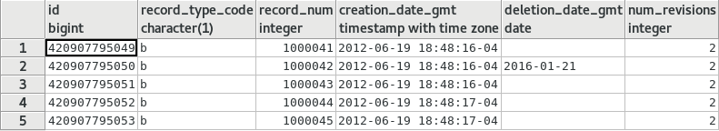SQL SELECT Statement cont.
- This is ok, but maybe we also wanted "Title" from the bib record
- We'll use a JOIN!
- Looks like table "bib_record_property" has what we need
SQL SELECT Statement cont.
SELECT
r.id, r.record_type_code,
r.record_num, r.creation_date_gmt,
r.deletion_date_gmt, r.num_revisions,
p.bib_record_id, p.best_title
FROM
sierra_view.record_metadata AS r
JOIN
sierra_view.bib_record_property AS p
ON
p.bib_record_id = r.id
WHERE
r.record_type_code = 'b'
ORDER BY
r.id ASC
SQL SELECT Statement cont.
Results...
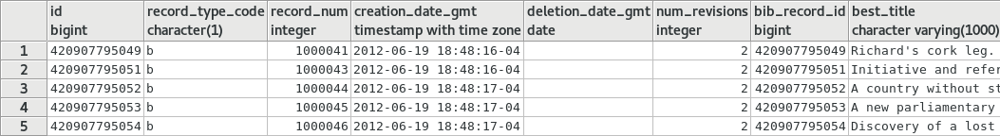SQL SELECT Statement cont.
- This looks better
- But wait, where's bib record number 1000042?
SQL SELECT Statement cont.
- Table, "bib_record_property", has no foreign key for the deleted record and therefore won’t be joined in our results
- We can fix this!
- ... with a LEFT JOIN (or LEFT OUTER JOIN)!
SQL SELECT Statement cont.
SELECT
r.id, r.record_type_code,
r.record_num, r.creation_date_gmt,
r.deletion_date_gmt, r.num_revisions,
p.bib_record_id, p.best_title
FROM
sierra_view.record_metadata AS r
-- changed LEFT JOIN to LEFT OUTER JOIN
LEFT OUTER JOIN
sierra_view.bib_record_property AS p
ON
p.bib_record_id = r.id
WHERE
r.record_type_code = 'b'
ORDER BY
r.id ASC;
SQL SELECT Statement cont.
Results...
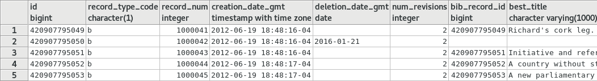SQL GROUP BY / HAVING and Aggregate Functions
- Reduces sets into common values, or groups results of one or more column together
- Often used along with aggregate functions
- COUNT()
- SUM()
- MAX()
SQL GROUP BY / HAVING and Aggregate Functions cont.
- Let us say that we wanted to count the number of patrons where the first name is "Ray"
SQL GROUP BY / HAVING and Aggregate Functions cont.
SELECT
n.first_name,
COUNT(*) AS count
FROM
sierra_view.patron_record_fullname AS n
WHERE
LOWER(n.first_name) = 'ray'
GROUP BY
n.first_name
SQL GROUP BY / HAVING and Aggregate Functions cont.
Results...
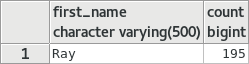SQL GROUP BY / HAVING and Aggregate Functions cont.
- HAVING
- Allows for limiting results of an aggregate function
- Example query: find all location codes having exactly 8 items
SQL GROUP BY / HAVING and Aggregate Functions cont.
SELECT
i.location_code,
count(*)
FROM
sierra_view.item_record AS i
GROUP BY
i.location_code
HAVING
count(*) = 8
SQL GROUP BY / HAVING and Aggregate Functions cont.
Results...
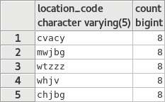SQL GROUP BY / HAVING and Aggregate Functions cont.
- Another useful aggregate function example
- SUM() a series of numbers from results
- Find patrons record IDs for patrons records that have total fines that are exactly at $10 (the amount that prevents patrons from borrowing)
SQL GROUP BY / HAVING and Aggregate Functions cont.
SELECT
f.patron_record_id
FROM
sierra_view.fine as f
GROUP BY
f.patron_record_id
HAVING
SUM(
(f.item_charge_amt
+ f.processing_fee_amt
+ f.billing_fee_amt)
- f.paid_amt
) = 10.00
SQL GROUP BY / HAVING and Aggregate Functions cont.
Results...
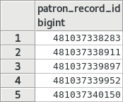SQL GROUP BY / HAVING and Aggregate Functions cont.
- These are database IDs and not very useful on their own
- What would be more useful is the patron record numbers, so we can use them in a review file!
- !
Subqueries and WHERE IN Statements
- In the example above, we were able to target patrons who had fine of exactly $10.00 to get the patron record IDs. But these are database IDs.
- This doesn’t tell us anything about the patron, or even the patron record number
- One way to get additional data is to use an SQL feature known as the sub-query
Subqueries and WHERE IN Statements cont.
- Subqueries are simply nested queries
- Example Query: Find patrons
record IDspatron record numbers for patrons records that have total fines that are exactly at $10 (the amount that prevents patrons from borrowing)
Subqueries and WHERE IN Statements cont.
- Query part 1: find patron record numbers
SELECT
r.record_type_code
|| r.record_num
|| 'a' AS patron_record_num
FROM
sierra_view.record_metadata AS r
WHERE
r.record_type_code = 'p'
LIMIT 5;
Subqueries and WHERE IN Statements cont.
Results...
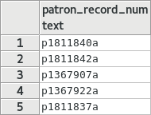Subqueries and WHERE IN Statements cont.
- Query part 2: Find patrons record IDs for patrons records that have total fines that are exactly at $10
- We already wrote this query in the previous example... we can nest it, or treat it as a subquery!
Subqueries and WHERE IN Statements cont.
SELECT
r.record_type_code
|| r.record_num
|| 'a' AS patron_record_num
FROM
sierra_view.record_metadata AS r
WHERE
r.id IN(
SELECT
f.patron_record_id
FROM
sierra_view.fine AS f
GROUP BY
f.patron_record_id
HAVING
SUM(
(f.item_charge_amt
+ f.processing_fee_amt
+ f.billing_fee_amt)
- f.paid_amt
) = 10.00
)
LIMIT 5;
Subqueries and WHERE IN Statements cont.
Results...
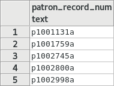OK ... Now What?!
A whole bunch of cool things!
- Importing record numbers into a review file!
- Write scripts and automate reports!
- Create Other Apps!
Importing into Review File
iii Documentation 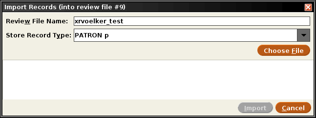Importing into Review File cont.
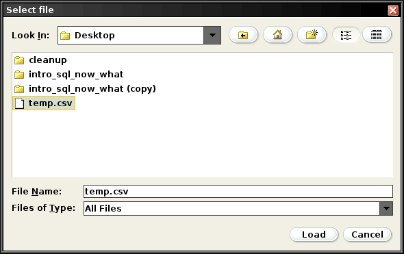Importing into Review File cont.
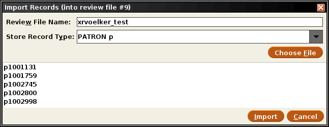Importing into Review File cont.
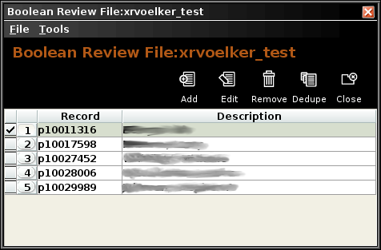Write scripts and automate reports
- PostgreSQL is widely supported by many programming languages and their libraries.
- PHP, Perl, Python, Node, R … etc.
- You can use the SQL statement to create a variety of applications and tools that might need access to real-time data from within Sierra.
Write scripts and automate reports cont.
- Applications
- Item inventory application (github link)
- New books / items list for web (github link)
Write scripts and automate reports cont.
- Automated Reports and Statistics
- Duplicate patrons (same barcodes exist in multiple records, or same first name, last name and birth date may indicate a duplicated patron)
- Data Entry errors: malformed data (phone number for example)
- Number of circulations grouped by item type, call number, location code, and circulation location (github link)
- While there are some things you can do with the Create List (Review File) function from within Sierra, there are just some types of searches that are not practical / possible.
- Get a simple count of things that fit a certain search criteria.
- Group items into common shared attributes. Grouping by call number class for example.
- Find bib records where all attached items are suppressed (github link)